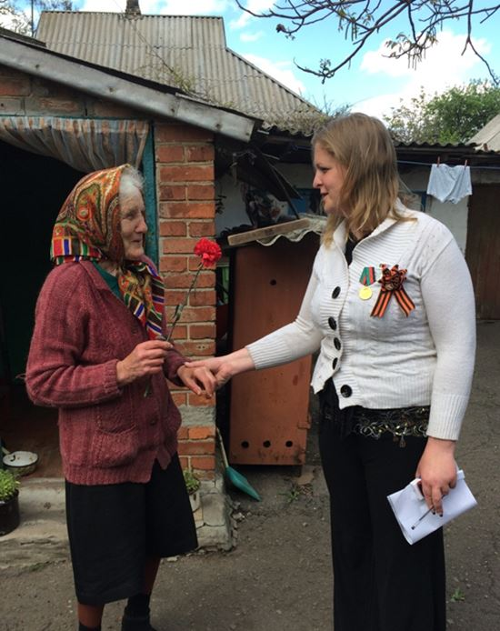

Je rentre à peine de ma dernière mission humanitaire au Donbass où je me suis rendu pour la quatrième fois depuis décembre 2014 pour apporter de l’aide aux plus démunis. Malheureusement la situation est toujours la même sur la ligne de front avec une guerre de tranchée quotidienne qui charrie son lot de blessés, de destruction aveugle et de morts. Avec mon association Ouest-Est nous avons été à Gorlovka et Zaitsevo pour distribuer de l’aide aux vétérans et aux retraités qui vivent littéralement sous les bombes dans une situation de précarité extrême.
On pourrait se croire en Syrie ou en Iraq mais on est bel et bien en Europe en 2017. On ne se rend pas compte de ce qu’est la vie de ces personnes qui vivent au rythme des bombardements quotidiens, à qui l’on coupe souvent l’eau et l’électricité, qui n’ont pas accès aux soins médicaux fondamentaux et dont les retraites ne sont plus payés par Kiev depuis longtemps. Sans l’aide de la DNR, la Russie et plus modestement d’associations humanitaires indépendantes comme la notre ces personnes mourraient de faim. Les besoins sont criants : nourriture, médicaments, vêtements…
On n’a clairement pas assez. De retour en France il faut que l’on fasse un très grand appel à la générosité pour continuer à aider les déshérités du Donbass.
Malgré la guerre, nous sommes accueillis très chaleureusement et tous sont agréablement surpris de voir que ce sont des Français qui viennent les aider. Pendant qu’on va de maison en maison on entend les bombes exploser et les échanges de mitraillettes avec l’armée ukrainienne qui se trouve à quelques centaines de mètres seulement. On est dans une situation complètement surréaliste en pleine Europe du XXIe siècle. Quand je raconte cela à mon retour en France les personnes restent incrédules. « Quoi ? Comment ça ?
Mais personne ne nous en parle. » me dit-on en boucle. Et oui personne n’en parle, en tout cas pas les medias.
C’est curieux non ? On nous passe en boucle des images terribles de guerres des quatre coins du monde mais cette guerre européenne, qui a coûté déjà plus de 10 000 vies, les journalistes n’en parlent pas. Ceux qui croient encore à l’indépendance des journalistes doivent nous expliquer ce lourd silence médiatique. Heureusement je rentre avec des photos, des témoignages, des vidéos que je m’empresse de partager sur les réseaux sociaux. On a peu de moyens mais on a beaucoup d’énergie et je sens que de plus en plus de personnes ouvrent les yeux sur la tragédie que traverse le Donbass aujourd’hui. C’est bon signe, il faut continuer de crier la vérité sur le Donbass. C’est dans l’intérêt de la justice et de la paix.
Lors de cette mission j’ai pu me rendre à Donetsk et participer aux festivités organisées pour célébrer la victoire sur la nazisme le 9 mai et le 3è anniversaire de la jeune République Populaire de Donetsk (DNR) deux jours plus tard. C’était la 2è fois que j’assistais à ces deux célébrations et je dois avouer que j’en sors bouche bée à chaque fois. Voilà un peuple en guerre depuis 2014, abandonné de tous et qui trouve quand même la ressource pour aller parader en souvenir de la défaite qu’il a infligé au 3è Reich en 1945 et aussi pour célébrer cette phénoménale aventure de la République qu’il a créé il y a tout juste trois ans. On connaît ici le prix du sang et si la victoire de 1945 est encore fêtée en grande pompe de nos jours c’est parce qu’on refuse d’oublier les sacrifices menés par les aïeux des habitants de la DNR pour défendre leur terre.
Car le combat de ces enfants de Russes n’est pas un combat nouveau. C’est un combat qu’ils mènent sciemment pour leur liberté et qui s’inscrit dans le temps.
Dans une Union européenne où les chefs politiques sont remplacés par des banquiers, où on apprend à l’école que les peuples n’ont pas d’histoire et où on fait voter des référendums que les gouvernements ne prennent pas en compte… quelle bouffée de liberté de voir ce peuple du Donbass s’ériger et dire NON ! Après tout c’est vrai qu’il aurait pu accepter très simplement le coup d’État de Kiev en février 2014, il aurait pu renoncer à l’usage de sa langue maternelle, il aurait pu accepter de voir les soldats de l’OTAN défiler dans ses rues, il aurait pu continuer de se soumettre aux oligarques comme à Kiev, il aurait pu accepter de vendre ses mines à des trusts étrangers…mais il a dit « Niet ».
Il a dit « Niet » non seulement à ceux qui ont organisé le coup d’État à Kiev mais il a dit non au fatalisme et au désespoir. Loin d’être passifs les habitants de la DNR sont d’avant-garde. Ils font la guerre sur le front tout en se battant sur les lignes arrières pour reprendre leur société en mains et construire leur avenir.
J’ai très clairement compris cette volonté de bâtir une société nouvelle lors d’un colloque international organisé sur place, où j’étais invité, et qui portait sur la paix dans la région et la coopération économique entre les deux républiques du Donbass et des pays étrangers. Ce colloque auquel participaient des représentants officiels d’États étrangers marque cette volonté de construction qui caractérise l’État d’esprit du Donbass en ce moment. Sur la ligne de front j’ai vu la guerre de position, à Donetsk j’ai vu la guerre de transformation. Ils ne perdent pas leurs temps et construisent déjà les ponts qui vont permettre à leur économie de se développer et d’assurer l’autosuffisance de leurs deux républiques.
Le paradoxe de cette histoire est que c’est Kiev qui a facilité cette situation et rendu le retour des Républiques impossibles. C’est Kiev qui a imposé les blocus économiques, refusé de payer les allocations, fermé les banques et tiré sur les habitants du Donbass… Kiev leur ferme toutes les portes en espérant les asphyxier alors qu’au même moment Moscou et d’autres pays négocient des accords de partenariat de développement économique. Il n’est pas compliqué de voir qui sera le dindon de la farce à la fin. A chaque fois que le petit peuple du Donbass surmonte un obstacle tendu par Kiev il se sent forcément ragaillardi et cette motivation se transmet à l’ensemble de la société des mères au foyer aux soldats sur le front en passant par les professeurs, les médecins ou les mineurs. Ce nouvel enthousiasme des habitants du Donbass doit être ce qui inquiète le plus leurs ennemis qui savent très bien que le morale d’un pays en guerre est le facteur qui détermine le plus ses chances de victoire ou de défaite. J’ai clairement vu un peuple du Donbass qui se bat avec l’énergie de l’espoir. C’est un signe très positif pour la suite qui ne doit pas nous dispenser de continuer à crier la vérité sur le Donbass et aider les populations locales, mais qui doit nous ragaillardir et nous donner, également, plus de forces dans le combat et plus d’espoir pour la victoire et la paix.
N.M.
Pour aider les habitants du Donbass, n’hésitez pas à faire un don en ligne sur notre site www.ouest-est.org
Partager cette page